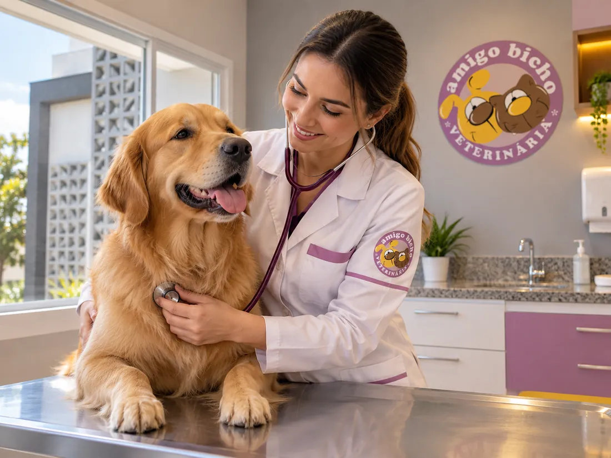
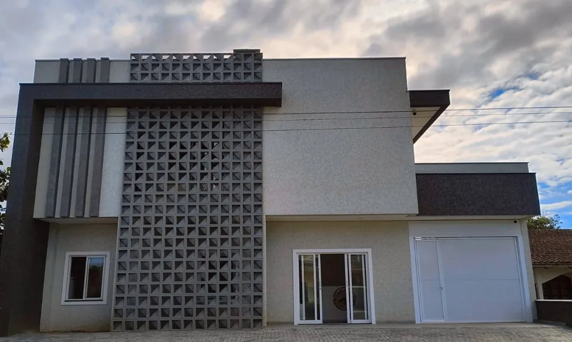
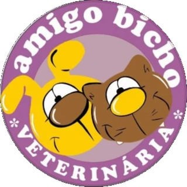
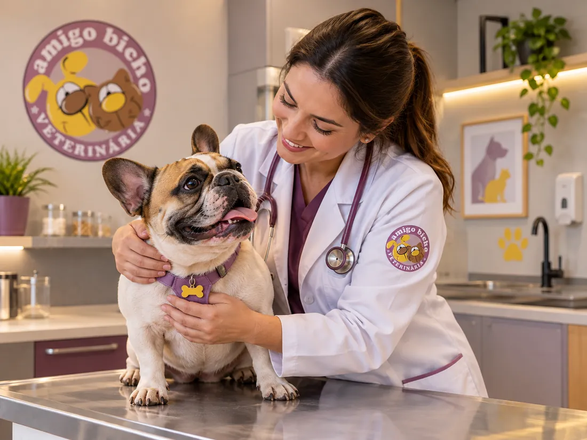
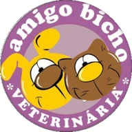

Atendimento veterinário
Avaliação para entender o quadro do animal, orientar cuidados e definir os próximos passos.
Amigo Bicho Veterinária · Itapoá, SC
Consultas, Clínica Médica, vacinação, exames, atestados e acompanhamento com a Dra. Suzana Bernardes Taraschuka.

Imagem ilustrativa · substituir por foto realServiços veterinários
Da prevenção à avaliação clínica, a Amigo Bicho reúne atendimentos para acompanhar a saúde de cães e gatos em diferentes momentos.
Falar com a Amigo BichoAvaliação para entender o quadro do animal, orientar cuidados e definir os próximos passos.
Consultas clínicas para prevenção, acompanhamento e avaliação de sintomas ou mudanças percebidas pelo tutor.
Acompanhamento clínico considerando histórico, sinais apresentados e necessidades de cada animal.
Orientação e aplicação de vacinas conforme fase de vida, histórico e necessidades do pet.
Exames para apoiar investigação e acompanhamento clínico, conforme indicação veterinária.
Emissão de atestados quando aplicável, mediante avaliação do animal e finalidade do documento.
Medicamentos disponíveis para apoiar a continuidade dos cuidados prescritos ou orientados no atendimento.

A Amigo Bicho
A Amigo Bicho é voltada ao atendimento de cães e gatos, com consultas, vacinação, exames, atestados, medicamentos e acompanhamento em Clínica Médica.
A clínica atende no bairro Paese e reúne em um só endereço as principais informações para o tutor compreender os serviços, localizar a clínica e entrar em contato.

Quem atende
Médica-veterinária · CRMV-SC 2955
Especialização em Clínica Médica de cães e gatos
A Dra. Suzana realiza atendimento clínico de cães e gatos, acompanhando cuidados preventivos, consultas de rotina e situações que exigem avaliação, investigação e acompanhamento veterinário.
A avaliação considera histórico, sinais apresentados pelo animal e exames indicados para orientar os cuidados seguintes.
Agendar consultaPrevenção e acompanhamento
Vacinação, avaliações periódicas e orientação sobre a rotina fazem parte do acompanhamento veterinário. Idade, alimentação, ambiente, viagens, contato com outros animais e histórico de saúde podem mudar os cuidados indicados.

Primeira visita
Envie uma mensagem pelo WhatsApp e informe o motivo do atendimento.
A equipe informa disponibilidade e orienta caso exista alguma preparação importante.
Informe histórico, mudanças percebidas, medicamentos utilizados e outras informações relevantes.
Depois da avaliação, a veterinária explica os cuidados indicados e os próximos passos.
Estrutura
Esta é uma versão demonstrativa. Os espaços abaixo foram deixados prontos para receber imagens reais da Dra. Suzana, recepção, consultório, cães e gatos em atendimento.
Como chegar
Dúvidas frequentes
Se a sua dúvida não estiver aqui, fale com a clínica pelo WhatsApp.
O ideal é entrar em contato pelo WhatsApp para consultar disponibilidade e organizar o atendimento.
Sim. A clínica trabalha com atendimento veterinário e Clínica Médica de cães e gatos.
Sim. A Amigo Bicho realiza vacinação e orienta o tutor de acordo com o histórico e as necessidades do animal.
Exames fazem parte dos serviços divulgados pela clínica. A necessidade de cada exame é definida a partir da avaliação veterinária.
A clínica realiza emissão de atestados quando aplicável. O documento depende da avaliação veterinária e da finalidade solicitada.
Sim. Medicamentos veterinários estão entre os serviços disponibilizados pela clínica.
De segunda a sexta-feira, das 9h às 18h, e aos sábados, das 9h às 12h. Aos domingos a clínica permanece fechada.
A clínica fica no bairro Paese, em Itapoá, na Rua 1020, nº 392.

Contato
Entre em contato com a Amigo Bicho, informe o atendimento que procura e consulte a disponibilidade.